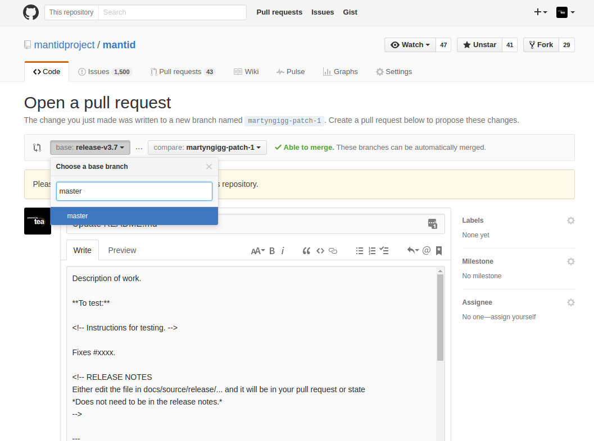

Contents
This page describes the workflow used in conjunction with Git and GitHub for those who have push access to the repository.
Go here for a cheatsheet of Git commands.
Go here for a (fairly) comprehensive guide to solving your various Git problems.
We follow the GitHub flow, using branches for new work and pull requests for verifying the work.
The steps for a new piece of work can be summarised as follows:
When naming public branches that will be
pushed to GitHub, please follow the convention of
issuenumber_short_description. This will allow others to discover
what the branch is for (issue number) and quickly know what is being
done there (short description). Please remember that public branches
should not be rebased.
For private branches please follow the convention
yourname/issuenumber_short_description. You can sync these with
GitHub (for backup reasons) and rebase. Since the branch name is
prefixed with your name people will know, by convention, that it is a
private branch and can be rebased, deleted, etc at the owner’s
whim. Changing a private branch is done by simply renaming the branch
to drop the prefix.
For an general overview of using pull requests on GitHub look here.
When creating a pull request you should:
A good example is here.
Recommended reading: How to Write the Perfect Pull Request
Pull requests that go an extended period of time without any activity are considered stale and will be picked up by a (partially) automated bot which will notify those that are required to take action in order to keep the review process going.
This is also used to notify developers of pull requests that develop conflicts with the base branch and that fail continuous integration tests, in those two cases the age of the pull request is ignored.
The reasons a pull request may be flagged up currently are:
(code for the bot is currently here)
At the start of a code freeze before a major release there will be a
release branch created with the name release-vX.Y, where X.Y
are the major and minor version numbers, respectively. At this point
only bugfixes should be applied to this release branch so that it can
be stabilized for the release. The release branch will be merged to
master periodically so bugfixes do not need to be separately
merged to master.
During the code freeze it is important to ensure that a new branch is created from the correct base branch depending on the scope of the changes:
master: maintenance fixes, new features. Command: git fetch -p && git checkout --no-track -b MYBRANCH_NAME origin/masterrelease-vX.Y: bugfixes. Command: git fetch -p && git checkout --no-track -b MYBRANCH_NAME origin/release-X.YOpen pull requests as normal to ask to merge your branch with its intended target.
The target branch on GitHub needs to match the base branch used in the commands above when the branch was initially created. If the compare view shows changes other than your own it is most likely that the base branch is incorrect and it needs to be fixed.
As an example consider the scenario where a branch named topic has
been based off the master branch as follows:
o---o---o---o---o master
| \
| o---o---o topic
\
o---o---o---o---o release
where we actually want the topic branch based off release
instead i.e.
o---o---o---o---o master
\
o---o---o---o---o release
\
o'---o'---o' topic
To fix this situation we use the rebase command, providing the
--onto option as follows:
git fetch
git rebase --onto origin/release origin/master topic